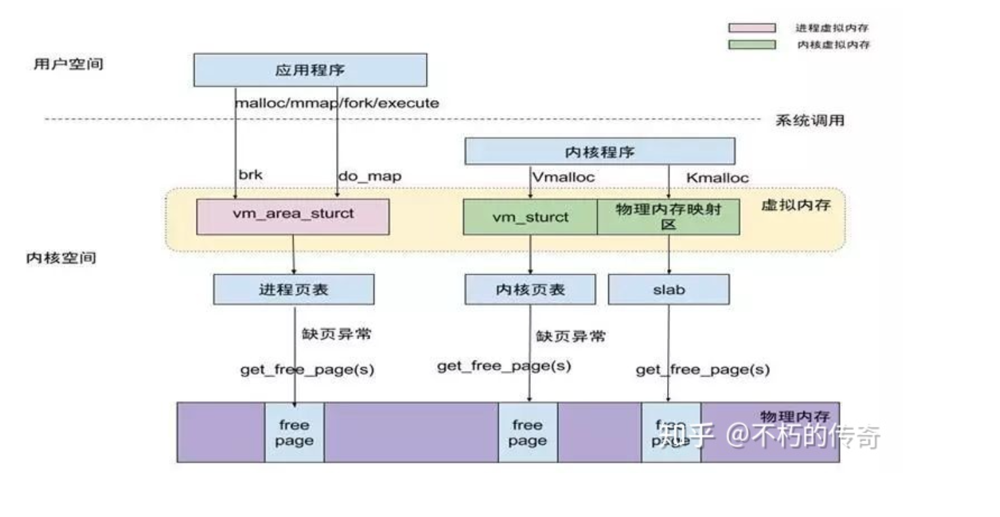

性能分析参考：
Perf-example
1. 进程管理
##### 1. 进程的的状态：
- R: 正在运行和等待运行的状态
- S: 可中断的睡眠状态
- D: 不可中断的睡眠状态
- Z: 僵死状态：
父进程没有等待子进程的结束就退出，导致子进程变为僵死进程 - T: 停止状态
疑问：
-
可中断进程和不可中断进程存在哪里，运行进程存在哪里，他们是存储在一个数据结构里吗？
答：可中断进程和不可中断进程存储在等待队列里，运行中的进程存储在就绪队列。就绪队列每个cpu都有一个。当进程需要等待某些事件时，被迫从就绪队列移除并加入到等待队列。当事件到达时，再从等待队列移入到就绪队列。 -
可中断进程和不可中断进程的区别
答：可中断进程可以被信号唤醒，不可中断进程不会响应信号。 -
僵尸进程是如何造成的，会有什么影响
答：进程退出，而父进程并没有调用wait函数等待。因为子进程退出释放资源和删除task_struct是分开的操作，通常子进程退出并不会立即删除task_struct。这样可有有机会让父进程获取并处理它的退出状态。进程的退出一定是调用了系统调用do_exit,这个函数会把和退出进程相关的资源都释放掉，比如：fd,mm_struct等，也会帮退出进程的子进程找好养父。
影响就是：大量的僵尸进程可能会用尽PID号，导致新进程不能创建 -
进程表是什么？如何存储？
答：linux中进程表就是由task_struct构成的双向列表，每个task_struct上存储有父进程指针和子进程的指针。 -
T状态是停止状态码？
答：T状态是暂停状态或跟踪状态，造成这个状态的原因是进程收到了SIGTOP信号或者gdb调试进程时使用断点中断进程。
当进程收到SIGCONT信号后会恢复执行。
##### 2. 进程的调度
-
进程调度要解决什么问题？
答：解决任务在考虑优先级的情况下，尽可能公平的利用cpu -
涉及到进程调度的数据结构都有什么？每个数据结构的作用
-
进程调度的策略都有些。
答: 大的方面有两种策略：实时调度策略和普通调度策略，
分别对应的实时进程和普通进程。
实时策略中又具体细分了几种策略：FIFO， RR、DEADLINE
普通策略中也具体细分了几种策略: NORMAL、BATCH、IDLE -
操作系统如果实现这些调度策略
答：每个调度策略用一个类实现，比如1中fair_sched_class(完全公平调度算法)。每个cpu都有一个就绪队列，这个就绪队列由每个调度策略的就绪队列组合而成。每次调度，cpu都是按照优先级先选择一个调度策略，然后再从这个调度策略的就绪队列中找到下一个要运行的进程。 -
调度器具体实现是什么？
答：linux中调度器有俩种分别对应俩个实现函数，主动调度器实现函数为shedule,
周期性调度器实现函数为scheduler_tick - 进程检测need_resched标志执行调度的时机有哪些？
- 进程主动调用schedule
- 从系统调用返回用户态时
- 当从中断返回用户态时
- 内核态启动可抢占
- 从中断返回内核态时
-
内核通过检查need_resched标志来决定是否调用schedule函数，谁来设置这个标记?
答：- 周期性调度器，scheduler_tick会在当前进程时间片用尽时设置这个标记
- try_to_wake_up唤醒进程，当发现唤醒进程比当前进程更有资格运行时，则会设置这个标记。
- 进程主动要求调度的时候
-
进程什么时候会主动要求调度
- 进程终止也就是调用exit()
- 进程睡眠也就是调用sleep()
- 调用系统调用sched_setscheduler改变调度策略
- 调用sched_yield放弃处理器
- 进程等待某个资源或事件
-
进程什么时候睡眠，什么时候唤醒？
答：等待I/O，等待被占用的信号量等。 -
调度schedule都干什么？
- 寻找下一个合适的进程
- 执行上下文切换
-
上下文切换是什么？
答：就是把前一个任务的cpu寄存器和程序计数器等保存起来，然后加载新任务的上下文到cpu寄存器和程序计数器。 -
cpu 上下文切换的场景
- 进程上下文切换：从一个进程切换到另一个进程，除了保存进程的内核堆栈，寄存器等内核态数据，还需要保存进程的虚拟内存，栈，全局变量等用户空间的数据。
- 线程上下文切换:
线程切换分为两种情况，如果切换的线程分属两个进程，那上下文切换就是进程上下文切换，如果线程同属一个进程，那相较于进程上下文切换，在切换时可以保持虚拟内存等资源不动，只切换线程私有的数据、寄存器等。 - 中断上下文切换：中断上下文切换不涉及到进程的用户态，所以不需要保存进程的虚拟内存，全局变量等。只是保存中断服务程序执行所必须的装填，包括寄存器，内核堆栈，硬件中断参数等。
- 系统调用上下文切换:
系统调用的过程会执行俩次上下文切换，分别是用户态到内核态，内核态到用户态。
##### 3. 系统中断
-
软中断的实现方式是什么？
答：软中断通常是以内核线程的方式运行，每个处理器有一个ksoftirqd/0
0为cpu编号。 -
软中断在什么地方执行？
- 可以在中断处理程序返回之前，但必须不能超过2毫秒且最多执行10次，
- 内核线程ksoftirq中，
- 开启软中断的函数local_bh_enable。如果设置了CONFIG_IRQ_FORCE_THREADING所有软中断都必须在内核线程中完成
-
系统中下半部机制都有哪些方式实现？
答：工作队列，软中断，tasklet，等待队列，完成变量。 -
工作队列，软中断，tasklet的区别和联系，分别用在什么场景？
- tasklet是基于软中断的，占用俩个软中断号：TASKLET_SOFTIRQ和HI_SOFTIRQ
- 软中断是编译时静态定义的，在运行时不能添加和删除，tasklet可以在运行时添加和删除.
- 同一种软中断的处理函数可以在多个处理器上执行，处理函数必须是可重入的需要使用锁来保护临界区。tasklet同一时刻只能运行在一个处理器上。
- 工作队列是使用内核线程(kworker)异步执行函数的通用机制。中断处理程序可以把耗时较长并且可能睡眠的函数交给工作队列来执行。
-
软中断的优先级要高于用户进程吗？
答：在中断上下文工作的软中断优先级高于普通进程。 -
软中断事件频率过高会有什么影响？
答：内核线程会因为cpu使用率过高而导致的软中断处理不及时，进而引发网络收发延迟，调度缓慢等。
##### 4. cpu性能分析
-
时钟节拍率，用户空间节拍率 分别是什么？如何查看和配置
- 时钟节拍率就是每秒中触发时间中断的次数，用全局变量jiffies来记录自系统自开机以来的节拍数。每发生一次时钟中断jiffies加一。节拍率可通过/boot/config来配置。
- 用户空间节拍率(USER_HZ)，是内核为方便用户空间而提供的。
固定为100也就是每秒100次。
/proc/stat提供的就是系统cpu和任务的统计信息，单位就是用户节拍率也就是10ms
-
什么是进程组， 什么是会话？
答： 进程组表示一组相互关联的进程，
会话是指共享同一个控制终端的一个或多个进程。 -
iowait 代表什么？
答：iowait高表示cpu处于空闲状态，进程都在等io。 - iowait高可能是什么问题？
答：系统中只有I/O类型的进程在运行， 也可能是存在i/o性能瓶颈。
等待IO的进程一般是不可中断状态 - cpu的状态
- cpu 性能分析的工具都有哪些？分别有什么用

2. 内存管理
##### 1. 系统内存管理结构：
- 解释上图
硬件上，内存管理单元（mmu)
用来做虚拟地址到物理地址的映射，页表缓存（TLB) 是页表的缓存。
内核中，页分配器采用伙伴算法
内核控制组是用来控制进程占用的内存资源
内存碎片整理是在找不到连续的物理页的时候通过迁移的方式整理内存得到连续的物理页
内存回收：不同的内存页有不同的回收策略。
块分配器指的是slab，主要用来分配一些内核通用的数据结构，比如task_struct，
dentry cache等。通过kmalloc和kfree来分配释放
不连续页分配器指的是：通过vmalloc和vfree来分配释放的物理上不连续虚拟上连续的页
##### 2. 内存管理全貌
-
用户空间和内核空间分别是如何分配
 -
伙伴算法是如何组织物理内存的

每个zone 都有三个水位线 low min
high。high是安全线，回收内存就是回收到安全线位置。内存位于low-min
说明内存轻微不足，内存位于low
以下说明内存严重不足。通过/proc/zoneinfo 可以查看这三个值 -
内核什么时候回收内存
异步回收。方式就是通过内核线程kswapd周期性回收。目的就保证系统任何时刻都能为内存申请提供足够的内存。
触发时机：当申请内存时发现内存处于low-min之间，触发异步回收
当申请大于空闲时强制回收。当申请内存时发现内存处于low以下则直接回收。 -
那些内存会被回收呢？
一种是anon的匿名页，主要回收手段就是swap,
一种是file-backed文件映射页，主要回收手段是写回和清空
内存和文件缓存一共用了四条链表组织 匿名页inactive, active,
文件页inactive, active
手动回收，主要是回收page cache, slab cache中的可回收部分。
可以通过写入/proc/sys/vm/drop_cache 1,2,3. 来控制删除page cache,
slab cache和都删除。 -
进程虚拟空间是如何组织的


每个段在内核中都是由一个vm_area_struct构成 -
进程和内核页表分别存在什么地方
进程的页表目录存储在mm_stuct-pgd
内核的页表存储在0号内核线程的active-mm-ini_mm-pgd
页表存储在物理内存的，但是起作用的时候，页表必须加载到mmu
-
Linux的内存回收算法用的什么？
LRU -
内存映射都有哪几种方式，分别有什么意义？
文件映射：把文件指定区间的内容读到物理页，再把物理页映射到虚拟内存空间。(通常是指有设备支撑）
匿名映射：就是把物理页映射到用户的虚拟内存空间 -
进程什么时候被oom
页分配器在多次尝试直接回收失败以后，就会调用oom
killer杀死进程。可以通过配置来改变进程的oom值降低被杀的风险。 -
buffer cache SReclaimable 分别是什么？有什么作用？
buffer: 内核缓冲区用到的内存, 对原始磁盘块的临时存储。
cache:
内核文件页缓存和Slab用到的内存，对应的是/proc/meminfo中Cached（用来缓存从文件读取的数据）和Sreclaimable之和
SReclaimable: 可回收的slab,
就是指在调用Kmem_cache_create函数向slab分配器申请内存时，使用SLAB_RECLAIM_ACCOUNT标志。主要包括dentry
cache, inode cache等各种用slab分配器创建的各种缓存。 -
如何衡量缓存使用的好坏
缓存命中率， 通过缓存获取到数据的请求次数/数据请求的总次数 -
缓存相关工具
cachestat 查看整个操作系统的读写命中情况
cachetop 查看每个进程的缓存命中情况
pcstat 查看指定文件在内存中的缓存大小
dd 命令磁盘和文件的拷贝工具，经常用来测试磁盘和文件的读写性能。
memleak 查看内存泄露
pmap 查看进程的内存分布 -
很多情况下明明发现Swap升高，但系统剩余内存还很多，这是为什么？ 这是因为NUMA 架构下,多个处理器被划分到了不同的Node上。每个Node有自己的本地管理空间.
某个Node的内存不足时，就会导致本Node的内存回收，进行swap, 当然可以通过设置/proc/sys/vm/zone_reclaim_mode ,来进行选择当本地Node内存不足时是从其他Node上寻找空闲内存还是从本地回收。 -
为什么匿名页要用swap的方式回收？
因为是堆内存或者是mmap分配的共享内存，它们很可能还要再次访问，所以不能直接回收。 -
如何设置能影响回收策略
/proc/sys/vm/min_free_kbytes 调整系统定期回收内存的阈值
/proc/sys/vm/swappiness 调整文件页和匿名页的回收倾向
/proc/sys/vm/zone_reclaim_mode 调整NUMA本地回收策略。 - Swap 有两种类型
- Swap 分区
- Swap 文件
- 开启文件swap流程
- 创建swap文件
- 配置swap文件：mkswap [文件名]
- 开启swap: swapon [文件名]
- 关闭swap: swapoff
- 如何查查看swap影响的进程
cachetop
smem –sort swap 将进程按swap得使用量排序 -
内存性能指标
主缺页异常: 缺页异常需要磁盘I/O的介入
次缺页异常: 可以直接从物理内存分配
可用内存：包括剩余内存和可回收缓存
共享内存：共享内存是通过tmpfs实现的,包括真实的共享内存和动态链接库以及程序的代码段。 -
内存指标对应的工具
-
内存分析流程
- 裸IO 直接IO和缓存IO
缓存IO：io请求会进过文件系统页缓存，这样的方式读取数据会经过两次数据拷贝，一次是从设备拷贝到内核，一次是从内核拷贝的用户缓存
裸Io和直接Io
直接IO就是绕过文件系统页缓存，直接和设备通用层打交道。数据只会经过一次拷贝，从内核到用户缓存。
裸IO是直接访问/dev下的块设备，绕过了整个文件系统。裸IO和直接IO的应用场景都是用在应用程序有自己的缓存，追求性能最大化。比如数据库服务。
3.文件系统/IO管理
1.系统文件系统的架构：
IO读写流程：
- 应用程序通过系统调用(Read/Write)发起I/O请求
- 系统调用处理：系统调用接口在接受到请求后，将请求转换为内核能理解的格式，然后调用对应的内核函数（这里涉及用户空间到内核空间的切换）
- 内核处理：在内核中， 对于读操作，内核首先检查所请求的数据是否在页缓存中， 如果在，则拷贝数据到用户空间，如果不在则交给文件系统处理。 对于写请求，同样写写入页缓存，稍后交给文件系统写入磁盘。
- 文件系统处理：对于涉及到文件I/O的请求，内核会调用文件系统函数来处理， 文件系统会根据文件系统的类型和布局，将请求转换为对应的磁盘块操作。比如一次磁盘操作的磁盘块为4K, 一个请求读1MB的数据，那么这里会将该请求转换为125次磁盘操作。
- 设备驱动处理：转换好的磁盘操作会交给设备驱动的I/O读写队列。 I/O调度器跟进调度算法从I/O读写队列中获取任务，进行实际的磁盘读写。
- 中断和完成：当硬件完成操作后，它会通过中断通知cpu，然后设备驱动会处理这个中断，更新对应的内核数据结构（如果一个读操作完成了，数据会被从硬件（比如说硬盘）复制到内核空间的缓冲区中，然后再复制到页缓存。此外，对于写操作，一旦数据成功写入硬盘，对应的页缓存中的数据会被标记为 “clean”，表示它们与磁盘上的数据是一致的。）。然后唤醒之前因为等待I/O完成而被阻塞的进程。
- 应用程序接收结果：对于 read 操作，数据现在在应用程序指定的缓冲区中。对于 write 操作，应用程序被通知操作已经完成。
2. 系统文件系统的相关问题
-
虚拟文件系统的数据结构有哪些，分别是什么作用?
超级块：存储整个文件系统的信息，比如文件系统的类型等。当把文件系统挂载到内存目录树时就会读取文件系统的超级块。
挂载描述符(mount) ：用来描述一个文件的挂载实例
文件类型(file_system_type):
这结构用来描述每种文件系统的类型，并实现了mount方法用来读取和解析这个类型的超级块。
inode:
用来记录文件的元数据，文件大小，访问权限，数据位置等。
dentry:
对应目录里的一条记录，记录文件名字和inode的对应关系，类似于file:inode。目录项是由内核维护的一个内存数据结够。
内核里专门有哥目录项缓存用来缓存dentry
struct file结构体：代表一个打开的文件实例
struct file_struct: 代表打开的文件描述符表 -
如何通过挂载实例访问挂载到的文件系统。
-
进程如何和文件关联的
-
硬链接和软连接的区别
- 目录项和inode的关系
假设有一个文件 /home/user/document.txt，进程需要打开并读取该文件：- 打开文件：
- 进程调用 open(“/home/user/document.txt”, O_RDONLY)。操作系统在 /home/user 目录中查找 document.txt 的目录项，获取指向 inode 的指针。
- 操作系统通过目录项中的指针加载 document.txt 的 inode，获取文件的元数据。
- 操作系统在系统打开文件表中创建一个新的条目，记录文件的状态信息（如读模式）和指向 inode 的指针。
- 操作系统在进程的文件描述符表中创建一个新的条目，包含文件描述符（假设为 3）和指向系统打开文件表的指针。
- 读取文件：
- 进程调用 read(3, buffer, size)。
- 操作系统通过文件描述符 3 在进程的文件描述符表中找到对应的条目，获取指向系统打开文件表的指针。
- 操作系统在系统打开文件表中找到对应的条目，获取文件的状态信息和指向 inode 的指针。
- 操作系统通过 inode 获取文件的数据块指针，读取相应的数据块并将数据复制到进程的缓冲区 buffer 中。
- 打开文件：
- 目录项缓存，inode缓存，页缓存的作用？ 假设有一个文件 /home/user/document.txt，进程需要打开并读取该文件：
- 路径解析： 操作系统首先在目录项缓存中查找 /home、/home/user 和 /home/user/document.txt 的目录项。如果缓存中存在这些目录项，则可以快速解析路径，找到对应的 inode 指针。如果目录项缓存中没有这些目录项，则需要访问磁盘上的目录结构，生成目录项并缓存起来。
- 加载 inode： 操作系统通过目录项中的指针在 inode 缓存中查找 document.txt 的 inode。如果缓存中存在该 inode，则可以快速获取文件的元数据。如果 inode 缓存中没有该 inode，则需要访问磁盘上的 inode 结构，加载 inode 并缓存起来。
- 读取文件数据： 操作系统通过 inode 中的数据块指针在页缓存中查找 document.txt 的数据块。如果缓存中存在这些数据块，则可以快速读取文件数据。如果页缓存中没有这些数据块，则需要从磁盘读取数据块，并将其缓存起来。
-
linux io读写流程
直接io: 读：从块设备层直接拷贝数据到用户态。
写：直接从用户态拷贝数据到块设备
缓存io:
读：从块设备层拷贝到内核页缓存，从内核页缓存在拷贝到用户态。
写：从用户态拷贝数据到内核页缓存，并设置页为脏，真正的写由timer触发内核线程去写 -
直接io mmap 缓存io？

- 通用块层的作用？
- 统一各种异构的磁盘设备，向上为文件系统和应用程序，提供访问设备的标准接口。
- 对io请求进行调度排队，通过重新排序和请求和并的方式提高磁盘读写效率。
- io调度的算法都有哪些？
- NOOP 先入先出 常用于SSD
- CFQ
完全公平调度器，为每个进程维护一个I/O调度队列，并按照时间片来均匀分配每个进程的I/o请求.
适用于运行大量进程的系统。 - Deadline
分别为读写请求创建不同的io队列，并确保最终期限的请求优先处理。
多用于I/O压力比较重的场景, 比如数据库。
-
如何实现零拷贝?
用户态直接io
mmap+write
sendfile(系统调用）
sendfile + DMA gather copy
splice -
内核刷新赃页的逻辑？
- 内核周期性的通过内核线程pdflush检测页缓存中的脏页然后与设备进行同步。
- 当内存紧张时被动触发pdflush写回赃页
- 有专门的系统调用sync可由用户应用程序控制回收
-
实现页缓存的数据结构是什么？
基数树(key和value的映射)
，基数树是针对稀疏的长整型key数据的查找，这种数据用哈希表存储的话哈希函数难以设计。 -
块缓存的作用是什么？实现块缓存的数据结构是什么？
块缓存就是块在内存的映射，快缓存在内核中的数据结构由缓存区头(buffer_head)和有用数据两部分组成。如下图
图中一页划分成了4个块，由4个缓存区头描述。页缓存也可能指向数据页。 -
块缓存和页缓存的区别和联系
块缓存和页缓存指向同样的页，块缓存可分为独立部分和附加部分，独立部分用来支持以块为单位的操作，附加部分用来在回写数据时减小回写的粒度。因为一次同步可能只需要同步脏的部分不需要同步整个页。页缓存用来支持以页为单位的块设备操作。 -
同步IO，异步IO，阻塞IO和非阻塞IO的区别和联系
同步IO指的是系统接收到io请求后等到处理完成后才会响应
异步指的是系统收到io请求后系统会先告诉应用程序请求已收到，之后处理完成后再以事件的方式告知应用程序
阻塞io指的是应用程序在提交io请求后一直等待直到结果返回
非阻塞io指的是应用程序在提交io请求后不等待，可以去处理其他任务。 -
磁盘和文件系统的性能指标?
-
io性能分析的一般思路
- 先用top vmstat观察资源整体情况
- 在用iostat具体分析磁盘问题
- 用pidstat定位具体进程的io问题
- 用strace lsof定位具体操作和文件
-
磁盘性能分析的工具
- 如何优化磁盘io?
- 第一步进行io基准测试，找出优化目标，对应的工具有fio(可以用来测试io),blktrace(记录磁盘设备的io访问情况）。
- 第二步找到性能瓶颈
- 第三部确定优化方案
- IO性能优化的基本思路？
- 应用程序优化
-
- 尽量采用追加写
-
- 尽量采用缓存io
-
- 可以在应用内部构建自己的缓存,或者用redis这类外部缓存
-
- 对同一块磁盘反复读写可以采用mmap的方式代替read/write
-
- 在使用 CFQ 调度器时，可以用 ionice 来调整进程的 I/O 调度优先级
-
- 在多个应用程序共享相同磁盘时，为了保证 I/O 不被某个应用完全占用，推荐你使用 cgroups 的 I/O 子系统，来限制进程 / 进程组的 IOPS 以及吞吐量
- 在需要同步写的场景中，尽量将写请求合并，而不是让每个请求都同步写入磁盘，即可以用
fsync() 取代 O_SYNC
-
- 文件系统优化
-
- 可以根据不同的负载场景选择不同的文件系统
-
- 在选好文件系统后，还可以进一步优化文件系统的配置选项，包括文件系统的特性（如ext_attr、dir_index）、日志模式（如journal、ordered、writeback）、挂载选项（如 noatime）等等
-
- 可以优化文件系统的缓存。比如，你可以优化 pdflush 脏页的刷新频率（比如设置 dirty_expire_centisecs 和dirty_writeback_centisecs）以及脏页的限额（比如调整 dirty_background_ratio 和 dirty_ratio 等）。再如，你还可以优化内核回收目录项缓存和索引节点缓存的倾向，即调整 vfs_cache_pressure（/proc/sys/vm/vfs_cache_pressure，默认值 100），数值越大，就表示越容易回收。最后，在不需要持久化时，你还可以用内存文件系统 tmpfs，以获得更好的 I/O 性能 。tmpfs 把数据直接保存在内存中，而不是磁盘中。比如 /dev/shm/ ，就是大多数 Linux 默认配置的一个内存文件系统，它的大小默认为总内存的一半。
-
- 磁盘优化
- 最简单有效的优化方法，就是换用性能更好的磁盘，比如用 SSD
替代 HDD - 我们可以使用 RAID，把多块磁盘组合成一个逻辑磁盘，构成冗余独立磁盘阵列
- 针对磁盘和应用程序 I/O 模式的特征，我们可以选择最适合的 I/O 调度算法
- 我们可以对应用程序的数据，进行磁盘级别的隔离。比如，我们可以为日志、数据库等 I/O 压力比较重的应用，配置单独的磁盘。
- 在顺序读比较多的场景中，我们可以增大磁盘的预读数据
- 我们可以优化内核块设备 I/O的选项。比如，可以调整磁盘队列的长度/sys/block/sdb/queue/nr_requests，适当增大队列长度，可以提升磁盘的吞吐量（当然也会导致I/O 延迟增大）。
- 最简单有效的优化方法，就是换用性能更好的磁盘，比如用 SSD
- 应用程序优化
- 为什么说建立应用自己的缓存有其一定的必要性？
因为多个程序共用系统缓存，可能存在问题，万一有的应用程序清除缓存就可能影响到其他程序。